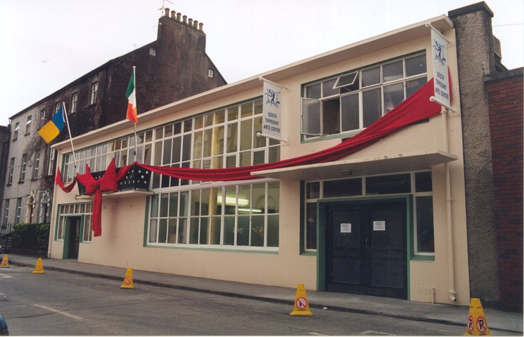

Introduction
The South Tipperary Arts Centre is a non-profit organisation supported by Tipperary S.R. County council and FáS. Its role is to develop and promote the arts in South Tipperary. It aims to promote participation in the arts within the county.

South Tipperary Art Centre on opening night